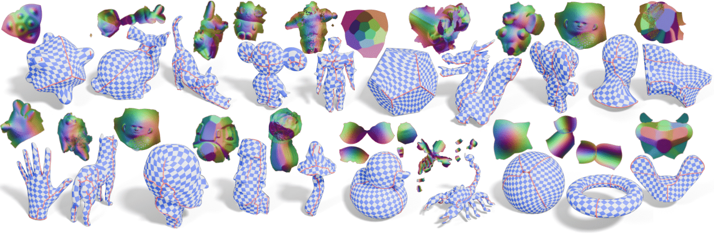
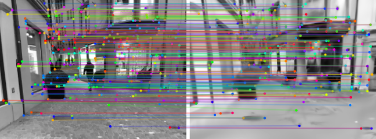
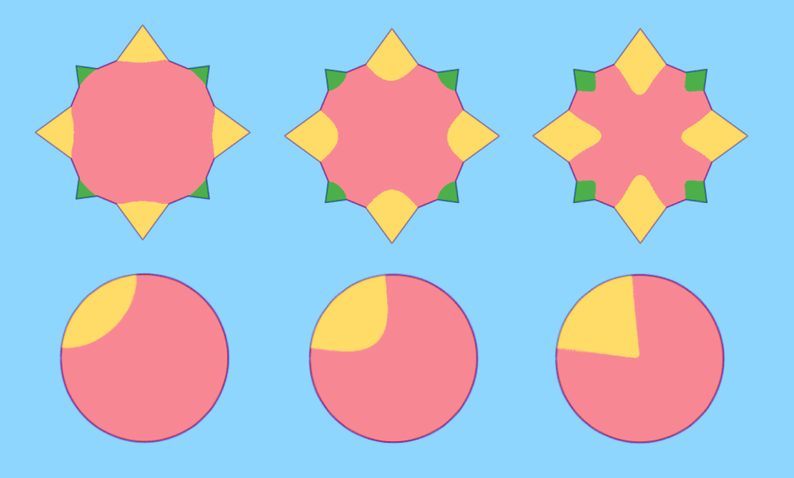

Alice Ziyu Wei
I am Alice Wei 魏子雨, a Computer Science student at the University of Southern California.
RESEARCH:
I am an undergraduate researcher at
Geometry and Graphics Group,
advised by
Prof. Oded Stein.
I also interned at EPFL’s
Geometric Computing Laboratory (Prof. Mark Pauly)
and ISTA’s
Visual Computing Group (Prof. Chris Wojtan).
I am interested in
Computer Graphics
and its application in facilitating
visual narrative development.
ART:
In my free time, I explore
world building
and
visual storytelling
across various mediums.
Research

Fracture-Based Cut Computation for Parametrization
Ziyu Wei, Dylan Rowe, Oded Stein
Under Review
We introduce a method for making cuts to manifold surfaces of arbitrary topology in order to make them flattenable for UV parametrization.

SplatPose: On-Device Outdoor AR Pose Estimation Using Gaussian Splatting
Weiwu Pang, Rajrup Ghosh, Jiawei Yang, Ziyu Wei, Branden Leong, Yue Wang, Ramesh Govindan
In Proceedings of the 33rd ACM International Conference on Multimedia Sep 2025
We develop SplatPose, a novel pose estimation technique that uses a data-driven 3D modeling technique called Gaussian Splatting. SplatPose uses a trained Gaussian Splatting model to render an image at an estimated device location, then matches features with the camera image to estimate pose.

Circle Numbers for Multi-Material Surface Completion
Ziyu Wei, Christian Hafner, Peter Synak, Aleksei Kalinov, Chris Wojtan
In Preparation
We present a new algorithm for completing curves or surfaces from partially available boundary data, founded on the idea that each piece of the boundary geometry gives us some confidence that points to one side will lie inside the enclosed object, and points to the other side, outside. The algorithmn can be used in multi-material settins and for various applications such as surface comepetion and point cloud reconstruction.
Other
Teaching Assistant
Community Involvement
Director of Campus Relations for USC ACM SIGGRAPH Student Chapter (2023-2024)